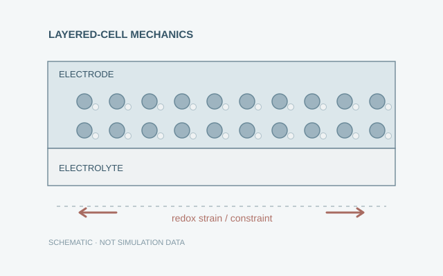
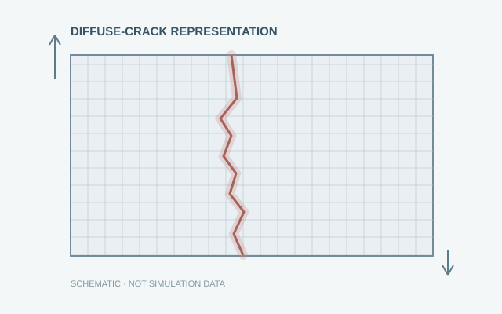
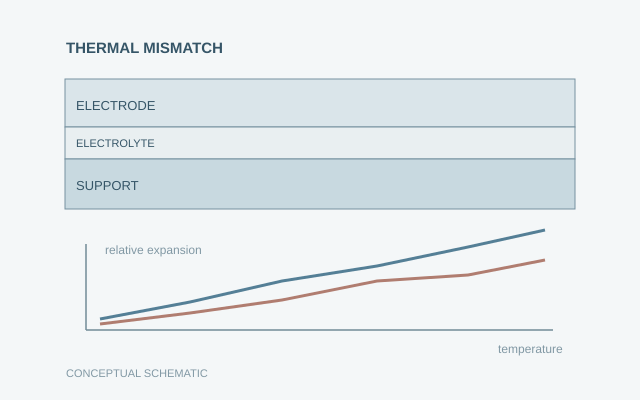
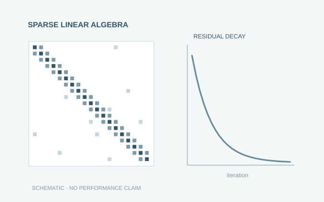

Home / Projects
Projects
Research questions, computational approaches, and public code when available.
Selected Projects

Electrochemical materials
Redox-induced stress and fracture in solid oxide cells
Examining how electrode contraction during reduction and expansion during oxidation affect stress transfer and potential cracking in the adjacent electrolyte.

Fracture mechanics
Phase-field modeling of crack propagation
Exploring diffuse-crack representations, coupled equilibrium equations, and nonlinear solution strategies for brittle fracture simulations.

Thermomechanical modeling
Thermomechanical stress in multilayer solid oxide cells
Studying stress development associated with thermal-expansion mismatch, processing histories, and operational temperature changes in layered cells.

Computational methods
Numerical methods and scientific computing
Building numerical workflows that connect discretization, sparse systems, iterative nonlinear solution, and clear verification plots.
Using the project pages
Each page outlines the central question, the modeling approach, and relevant methods. Where a public repository exists, it is linked directly. Illustrative figures are not presented as computed results.